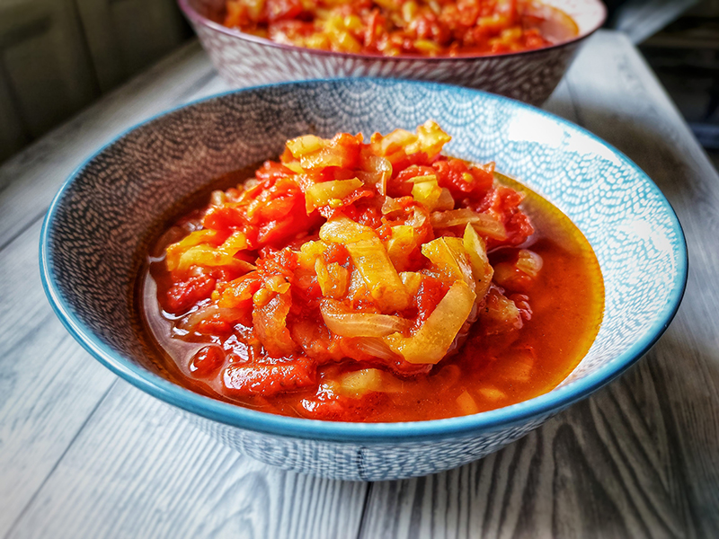

Lecsó

Description
Lecsó is a Hungarian staple made with sweet Hungarian peppers, onions, tomatoes, and paprika,
which are all stewed together in a bit of smoked bacon fat (or oil). It’s at its best when made from the kind of perfect tomatoes and peppers
that you find in late summer /early autumn. Lecsó is also such a beloved part of the Hungarian culinary canon that you might hear it used as a verb in Hungarian.
Ingredients
- 100 grams (or about 6 slices) of fatty bacon (szalonna), chopped (or 4 Tablespoons oil)
- 2 medium onions, finely chopped
- 2 tablespoons of sweet paprika
- 1 kilogram (2 pounds) sweet peppers, cored, seeded, and chopped
- 500 grams (1 pound) tomatoes, roughly chopped
- Salt to taste
Instructions
- Add the bacon to a pot and cook over low heat until it is rendered. Or, if you are using oil, heat it.
- Add the onions, cook over low heat until they are translucent (not browned), about ten minutes.
- Remove the pot from the heat and stir in the paprika.
- Add the peppers, and cook for about 15 minutes (until they soften), adding a bit of water in the beginning, if needed.
- Add the tomatoes, and cook uncovered for about 20 minutes, until the peppers are soft and the liquid reduces a bit.
Back